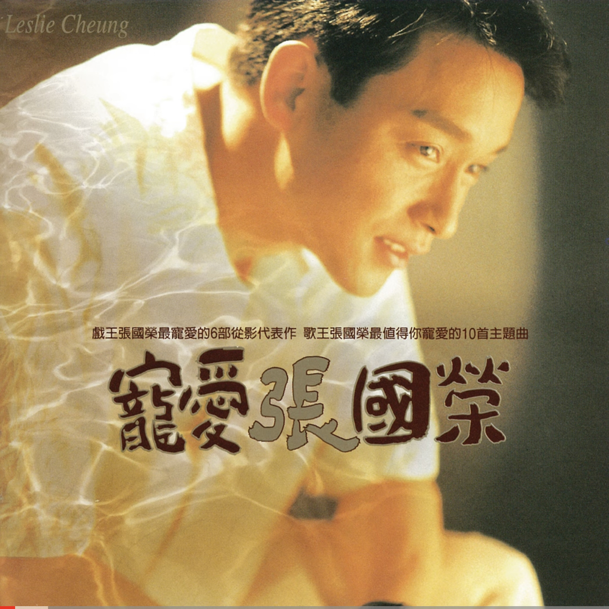
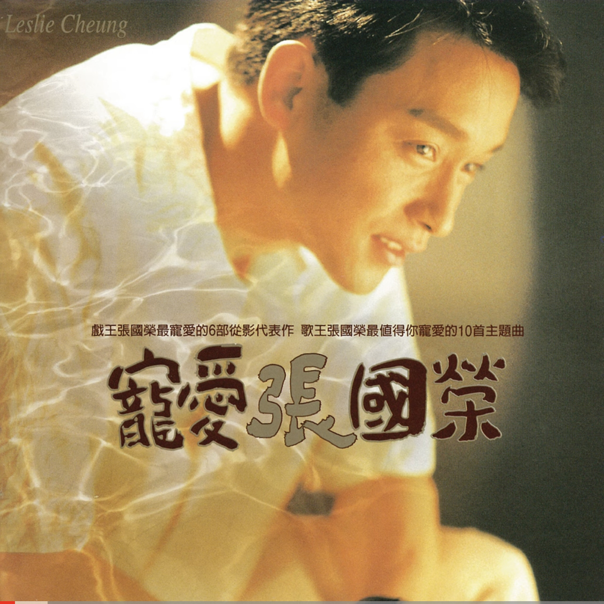

首頁
當年情常在心...紅塵夢醒無憾...
歌唱事業
 張國榮曾獲得十大中文金曲頒獎禮最高榮譽大獎金針獎，十大勁歌金曲最受歡迎男歌手獎，
張國榮曾獲得十大中文金曲頒獎禮最高榮譽大獎金針獎，十大勁歌金曲最受歡迎男歌手獎，
十大勁歌金曲金曲金獎，叱咤樂壇流行榜頒獎典禮叱咤樂壇男歌手金獎等獎項。
作為粵語流行音樂高峰時期的代表人物之一， 1980年代張國榮於韓國取得非常高的知名度，
是第一位享譽韓國樂壇的華人歌手。1987年發行的國語專輯《愛慕》在韓國空前大賣20萬張，
成為首位打入韓國的唱片市場的華人歌手。
1989年張國榮發行的專輯《The Greatest Hits of Leslie Cheung》在韓國銷量達30萬張，
打破了華語唱片在韓國的銷量紀錄。
1995年發行的專輯《寵愛》在韓國的銷量超過50萬張，至今仍保持華語唱片在韓國的銷量紀錄。

 
